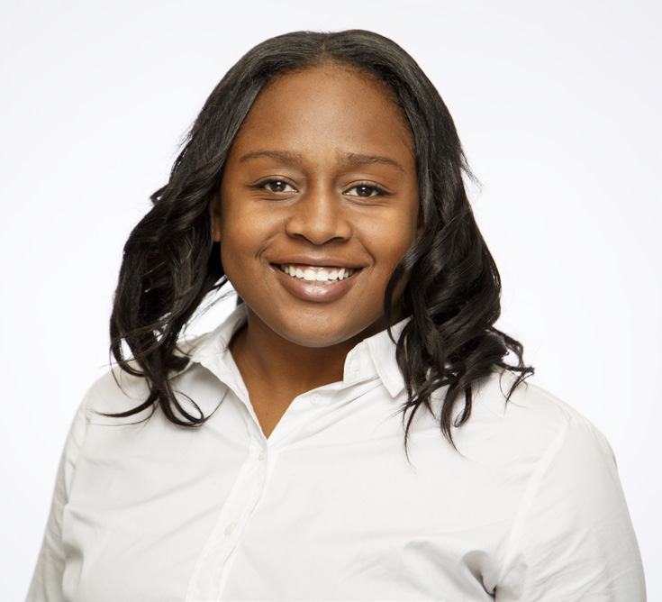

I joined NPower with little experience and knowledge in IT, but I was very eager
to learn. NPower’s Technology Service Corps is great because it can help
you acquire your A+ certification, it’s free of cost, has a great location and
classroom, offers site visits to big companies, internship experience and graduation
ceremony at the end. I’ve learned to be more confident and to learn
from my mistakes because that will help me grow and understand the information
I am learning. I have met and learned from great people and wonderful
teachers. The skills and fundamentals that I have learnt such as networking,
hardware, and much more will be with me for years to come. The best is yet to
come and I am very excited for the future.

Juan Jose Ayala-Sandoval, 24, North York
Internship: Accenture
I was at a crossroad in my life, working as a shift supervisor at McDonald’s,
not too sure where I wanted to go next, but after hearing about the NPower
program, great opportunity had shown itself. Ever since I was young, I had
huge passion for technology but never knew how to pursue. NPower gave
me the means by giving us a capable teacher to help achieve CompTIA A+
certification and by giving me the connection I needed to get my foot in the IT
world. From this program, I made many new friends who have supported me
through the program, helping me grow as a person and soon to be IT professional.
I will never forgot these people and experiences from the past weeks.
My future plan is to use everything I learned from the NPower program and to
give thanks for the opportunity by furthering my education in technology and
starting a career for myself in the IT world.

Peggy Lee, 23, Toronto
Employed: Synnex Canada
I always had an interest in technology and was fascinated with the many versatile
functions in which people interact with computers. However, I didn’t understand
the fundamentals of technology. I instinctively grabbed the opportunity
to advance my technological skills when I first heard about the NPower
program from a youth employment center. It was a difficult feat trying to balance
this program while completing my post-secondary degree, but it was
made possible with the aid of peers and staff at NPower. By sharing the same
passion for technology, we enhanced each other’s strengths while mitigating
our weaknesses and pushed forward for the finish line. My plan after NPower
is further improving my skills, staying in contact with my new peers and setting
a prime example for future NPower candidates!

El Roi Pablo
In April 2014, I completed Software Engineering and Interactive Gaming at
Centennial College. At first, I was searching for a job coding and programming,
but after half a year of looking, I thought to myself that I need to explore
what else there is for me in the IT field. A friend of mine had referred
me to NPower since he was not in the required age group of the program and
thought that I would have a better chance in succeeding and to get my foot
on the door in the IT field. NPower has helped me in so many ways such as
preparing me to get my A+ certificate and for my interviews, learning different
roles in the IT field, and extending my network through friends I met in the
program, site visits, and guest speakers. Joining NPower has been truly one
of the best decisions I made in my life.

Leonie McCleary,
Before I started NPower my life was on ‘pause’. A traumatic family experience
changed my priorities from my studies in Health and Society at York University
to dealing with the situation at hand. I also no longer wanted to pursue
nursing and didn’t see what career path a study of the social science of health
would lead me to. I started exploring new paths and then I was introduced
to NPower Canada. Since being in this program, I have learned so many skills
in IT and professional development that are invaluable. What fascinates me
about technology is it is ever evolving and changes rapidly. My future plan is
to combine my prior health studies with my new interest in IT by finishing my
undergraduate studies in Health Infomatics. I always had a passion to support
and care for people and pursuing a career in IT will still allow me to do that
by contributing to advancements that will support people by adding convenience,
flexibility and mobility to someone’s user experience. I look forward to
what new beginnings life is going to bring.

Laxman Gnanendran
Before NPower, I spent about three years in University doing an arts program
that never fit me. I was lost and decided to pull the plug on University. So
I found a job in Security; a job that didn’t fit and never challenged what I
thought I was capable of. I did however enjoy the company of my coworkers.
We spent a lot of time dreaming of our future but never having the courage to
step out of our comfort zone, and this kept me there for well over two years.
Recognizing that I had a spark for technology, I applied to a three-year college
level IT program and was accepted to start in January 2015. The problem was,
I couldn’t afford it. When I first heard of the NPower program through a radio
station, I thought it sounded too good to be true but applied anyway. Since
then, my time in the program has been nothing short of magical. Our site
tours and guest speakers have been monumental in helping me figure out a
path in the IT industry. NPower has given me a broomstick, an owl, box full of
every flavor beans and a train full of friends. I could not be any happier and
excited for my journey. Thank you.